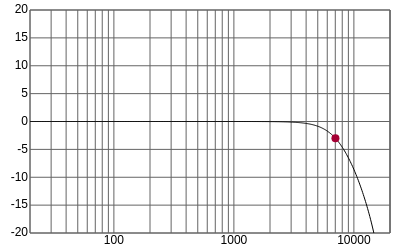
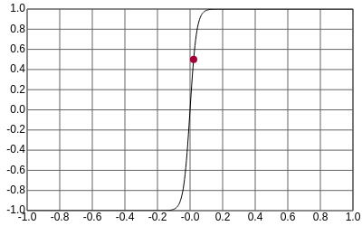
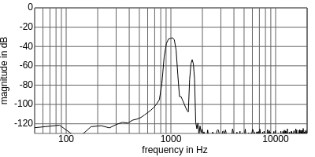
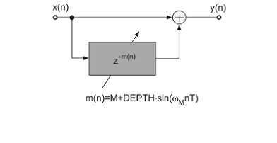
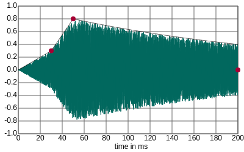

Helmut Schmidt University – Department of Signal Processing and Communications
jsdafx – Digital Audio Effects in JavaScript
Quantization, Dithering, and Noise Shaping
Oversampling
Audio Filters

Distortion

Audio Coding Psychoacoustics - Masking effect

Delay-Based Audio Effects

Fast Convolution

Dynamic Range Control